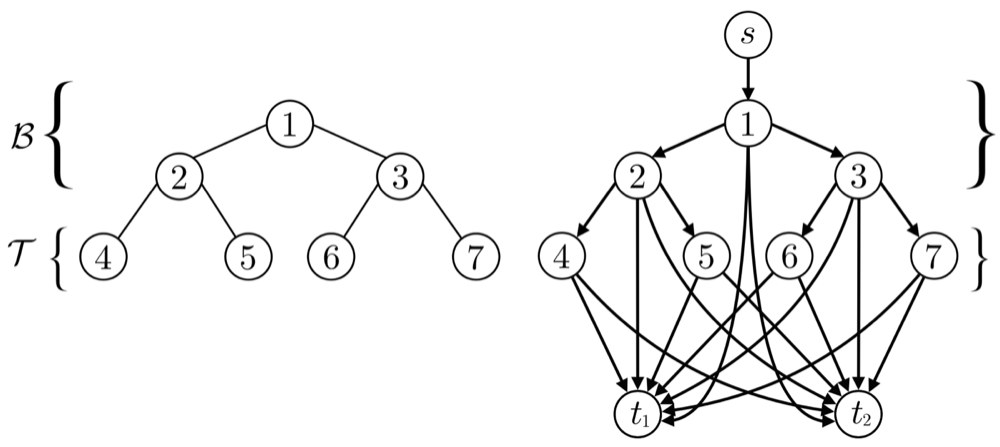
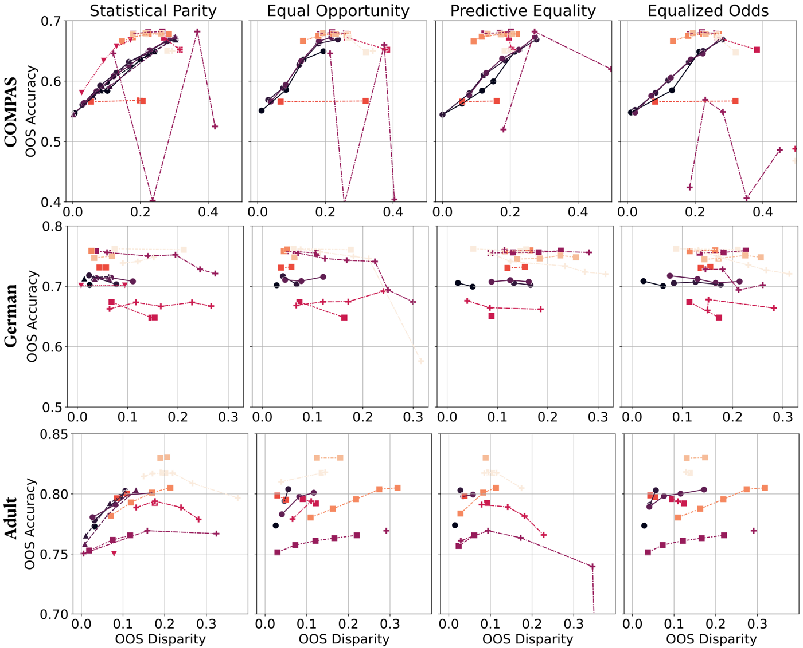
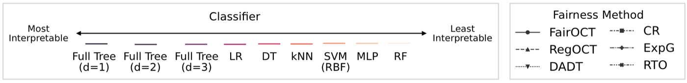
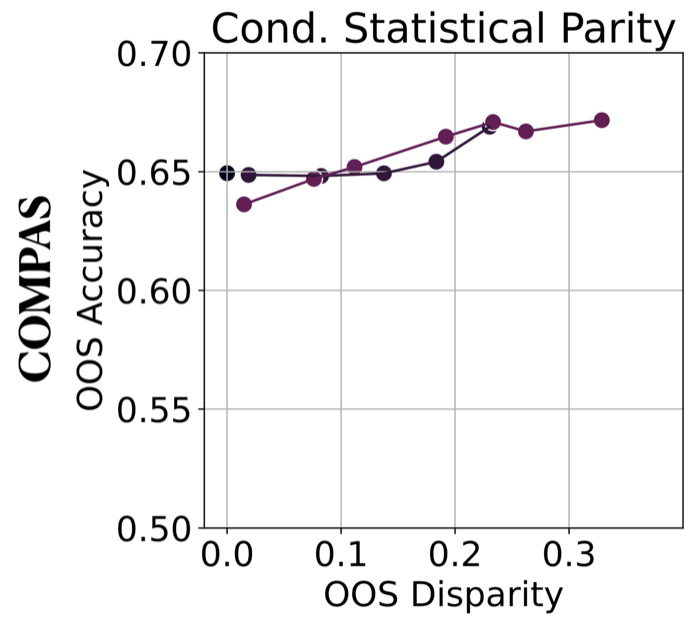
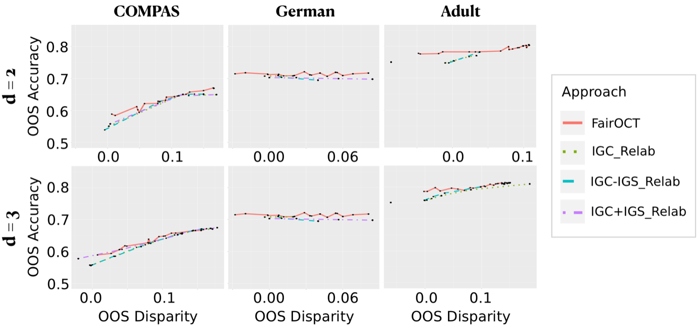

- 5 種類の公平性を制約に統計的パリティ、条件付き統計的パリティ、予測の平等、機会均等、均等オッズを、それぞれ線形の制約 2 本で MIO に加えられる。比較した手法のなかで条件付き統計的パリティを扱えたのは FairOCT だけだった。
- 解釈しやすさの代償 4.2 ポイント格差の上限を決めたとき、最も精度の高い複雑なモデルのテストの精度は、両者に結果がある格差の範囲で FairOCT より平均 4.2 ポイント高かった。
- 決定の複雑さ 7 対 59,126COMPAS で予測に要るパラメータの数は、深さ 2 の木が 7、ランダムフォレスト（100 本）が 59,126 だった（論文 Table 1）。
影響の大きい意思決定では、精度だけでなく解釈しやすさと公平性も求められるが、解釈しやすさをモデルの種類をまたいで比べる尺度がなかった
再犯の予測、ホームレスの人への支援の割当て、病気の診断などに機械学習が使われるようになった。こうした場面では、誤った予測を減らすための精度と、判断を説明できるための解釈しやすさが要る。論文が扱うのは、最も解釈しやすいモデルの 1 つである分類木を、ヒューリスティックでなく最適に学習する問題である。
公平性については、保護属性を学習から外すだけでは、郵便番号や収入のように保護属性と相関する特徴量を通じて差別が起きうる。論文は保護属性を知ったうえでグループ間の結果の釣り合いを求めるグループ公平性を扱う。定義が簡単で利害関係者に理解されやすく、実務でも重視されているからである。一方、解釈しやすさを数値で測る尺度はほとんどなく、よく使われる疎さ（葉の数や係数の数）も同じ種類のモデルのなかでしか比べられない。
正の予測を受ける確率を、保護グループごとに、条件をつけて、または真のクラスごとにそろえる 5 つの定義を扱う
予測を \(\hat Y\)、真のクラスを \(Y\)、保護属性を \(P\) とする。論文が扱う 5 つの定義は次のとおりである。
- 統計的パリティ：\(\Pr[\hat Y=1\mid P=p]\) がすべてのグループで等しい。
- 条件付き統計的パリティ：リスクを表す正当な特徴量 \(L=\ell\) を条件にして、\(\Pr[\hat Y=1\mid P=p,L=\ell]\) が等しい。
- 予測の平等：偽陽性率 \(\Pr[\hat Y=1\mid P=p,Y=0]\) が等しい。
- 機会均等：真陽性率 \(\Pr[\hat Y=1\mid P=p,Y=1]\) が等しい。
- 均等オッズ：偽陽性率と真陽性率の両方が等しい。
学習済みの分類器が新しい点を予測するのに要るパラメータの最小の数を、解釈しやすさの尺度にする
論文はこの数を決定の複雑さ（decision complexity）と呼ぶ。分類木なら分岐と葉の節点の数、ランダムフォレストならすべての木の節点の数の和、線形のロジスティック回帰なら特徴量の数（と切片）、k 近傍法なら学習データの大きさ、RBF カーネルの SVM ならサポートベクトルの数、ニューラルネットなら節点どうしの結合の数になる。疎さを広げたもので、どの種類のモデルにも定義でき、人が判断の過程をたどれるかという模倣しやすさ（simulatability）の一部を数値にしようとするものだと論文は位置づけている。
フローにもとづく最適分類木の MIO に、正の予測の割合の差を δ 以下にする線形の制約を加える
出発点は同じグループの FlowOCT（Aghaei ら）の定式化で、深さ \(d\) の完全二分木を、源 \(s\) から根を通り、各節点からクラスごとの吸い込み \(t_k\) へ流れるグラフに変える。特徴量は二値とし（整数やカテゴリにも広げられる）、各データ点が 1 単位の流れとして正しいクラスの吸い込みに着く数を最大にする。変数 \(z^i_{n,t_1}\) はデータ点 \(i\) が節点 \(n\) から正のクラスの吸い込みに流れるかを表すので、グループごとの正の予測の割合をこの変数の線形の式で書ける。

統計的パリティを許容幅 \(\delta\) で課す制約は次のとおりである。
条件付き統計的パリティでは \(\ell^i=\ell\) の点に、均等オッズでは \(y^i=k\) の点に絞って同じ形の制約を置き、\(k=0\) なら予測の平等、\(k=1\) なら機会均等になる。左辺はアフィンなので、\(|f|\le\delta\) を \(f\le\delta\) と \(-f\le\delta\) の 2 本に分ければ、混合整数線形最適化のまま Gurobi などで解ける。少数派のグループが一定の幅だけ有利になることを求める、といった変形も入れられる。先行研究の Fair OCT（論文では RegOCT）が公平性を罰則として目的に入れたのに対し、FairOCT は制約として入れ、しかもより効率的に定式化されている。
3 つのデータで、木にもとづく 2 手法と、どのモデルにも使える 3 手法と比べた
データは COMPAS（6,172 件、保護属性は人種で 4 水準）、Adult（30,162 件、性別）、German（1,000 件、25 歳以下かどうか）である。比較相手は、公平な最適木を罰則で学ぶ RegOCT（Aghaei ら 2019）、ヒューリスティックで木を育てて葉のラベルを付け替える DADT（Kamiran ら）、前処理で保護属性との相関を除く Correlation Remover（CR）、ラグランジュ乗数を格子で探す Exponentiated-Gradient（ExpG）、予測のしきい値を無作為化する後処理の RTO である。CR・ExpG・RTO は CART、ロジスティック回帰、k 近傍法、SVM、ランダムフォレスト、多層パーセプトロンと組み合わせた。
FairOCT は深さ 1〜3 の完全な木を、\(\delta\) を 0.01〜0.55 まで 0.01 刻みで変えて学習した。データを学習 75%・テスト 25% に 5 回分け、制限時間は 3 時間である。Adult は大きく次元も高いので、FairOCT と RegOCT は 2,700 件で学習し、ほかの手法と同じテストデータで評価した。DADT は統計的パリティと 2 グループしか扱えないので、COMPAS では人種を黒人か否かの 2 水準にしている。
FairOCT は格差の小さい側の結果を安定して出し、ほかの手法では格差 0.05 未満の結果はまれだった


FairOCT は格差の小さい側の結果を安定して見つけた。COMPAS ではどの公平性の定義でも格差 0〜0.3 の結果を出し、ほかにこの範囲を出した手法はない。範囲が狭まる Adult と German でも、ほかの手法は格差 0.05 未満の結果を安定して出せなかった。論文はこれを、\(\delta\) が格差の上限を直接決めるのに対し、ほかの手法は罰則・相関を除く度合い・\(\lambda\) を調整するだけで、結果の格差を保証しないためだとしている。RTO は調整するパラメータがなく、格差が 0.6〜0.9 程度になったので図にはほとんど出ていない。
統計的パリティでは、同じく最適な木を学ぶ RegOCT は FairOCT とほぼ同じ性能だったが、扱える公平性は 1 つだけで、FairOCT のほうが少なくとも 1 桁速い。DADT は COMPAS で FairOCT を上回って見えるが、これは人種を 2 水準にしたためである。同じ条件にそろえた付録の比較では、格差の上限を決めたとき、FairOCT のテストの精度は DADT の 3 つの変種より平均 1.6・2.8・1.7 ポイント高く、すべての実験で上回った。条件付き統計的パリティ（前科の数で条件づけ）を扱えたのは FairOCT だけである。深さ 1〜3 の性能が似ているのは、主に深さ 3 が制限時間内に最適まで解けなかったためと論文は述べている。


格差の上限を決めたとき、最も精度の高い複雑なモデルは FairOCT より平均 4.2 ポイント精度が高かった
予想どおり、浅い完全な木はランダムフォレストや多層パーセプトロンのような複雑なモデルよりわずかに精度が低かった。この差が解釈しやすさの代償である。German では、CR で学習したランダムフォレストの精度が、どの格差の上限でも深さ 2 の FairOCT より平均 6 ポイント高かった。COMPAS では、CR で学習したニューラルネットが深さ 2 の FairOCT を平均 3 ポイント上回ったが、これは両方に結果がある格差の範囲だけでの比較である。FairOCT は格差 0.15 未満の結果も出しており、そこにはニューラルネットの比較対象がない。全体として、両方に結果がある格差の範囲で、最も精度の高い複雑なモデルは FairOCT より平均 4.2 ポイント高かった。
多くの公平化の手法が完全な、またはそれに近い釣り合いに届かないので、この集計による比較の意味は限られると論文は断っている。Adult で 2,700 件だけで学習した FairOCT がほかの手法に近い性能を出したことから、最適化の手法が計算の壁に当たっても、代表的な小さなデータで学習すれば全体によく汎化しうるとも述べている。
最適性を示すための計算は重く、FairOCT の平均の求解時間は 1.1〜2.5 時間だった
FairOCT の平均の求解時間は COMPAS で 1.1 時間、German で 1.5 時間、Adult で 2.5 時間だった。深さ 2 では平均 3,014.6 秒・8,371.1 秒・6,644.9 秒（COMPAS・Adult・German）、深さ 3 はほぼすべて制限時間の 10,800 秒に達した。RegOCT は深さ 2 と 3 ではどのデータでも最適まで解けず、深さ 1 でも COMPAS で 2,210.9 秒と、FairOCT の 144.8 秒よりずっと長かった。DADT と CR は COMPAS と German で 1 秒未満、Adult で約 5 秒で木や分類器を作った（論文の付録 Table 3）。
MIO の最適分類木に公平性を罰則でなく制約として入れ、解釈しやすさとの関係まで測った研究である
FairOCT は、同じ USC のグループの Fair OCT（2019）が罰則で入れた公平性を、FlowOCT の強い定式化の上で制約として入れ直したものと読める。制約にしたことで格差の上限を直接指定でき、条件付き統計的パリティのように罰則の方法では扱えなかった定義も入れられた。実装はオープンソースの Python パッケージ ODTLearn に含まれている。
一方、深さ 3 で 3 時間の制限に達するように、MIO の計算の重さは残る。同じ統計的パリティの制約つきの最適な木を動的計画法で求める DPF は、この論文の arXiv 版の FairOCT を比較相手にして、何桁も速いことを報告している。
このページの数値・式・図は arXiv の LaTeX ソース（2201.09932、AIES 2023 の書式で DOI を含む版）による。ACM の出版版の本文とは照合していない。書誌は Crossref で確認した。
@inproceedings{jo2023learning,
title = {Learning Optimal Fair Decision Trees: Trade-offs Between Interpretability, Fairness, and Accuracy},
author = {Jo, Nathanael and Aghaei, Sina and Benson, Jack and G{\'o}mez, Andr{\'e}s and Vayanos, Phebe},
booktitle = {Proceedings of the 2023 AAAI/ACM Conference on AI, Ethics, and Society},
pages = {181--192},
year = {2023},
publisher = {ACM},
doi = {10.1145/3600211.3604664}
}